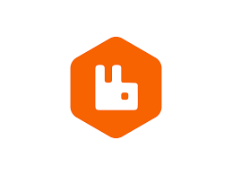

C#
C# .NET Core
.NET Core Angular
Angular React
React Docker
DockerAzure
SQL Server
 MongoDB
MongoDBRabbitMQ
 Kafka
KafkaOracle
C4 Model
 Git
Git GitHub Copilot
GitHub CopilotDesenvolvedor Sênior .NET | Especialista em Arquitetura de Software
Sou desenvolvedor sênior .NET com mais de 8 anos de experiência em backend, arquitetura de software, APIs RESTful e microsserviços escaláveis. Tenho sólida atuação em ambientes ágeis, com foco em Clean Code, SOLID, integração contÃnua e cloud (Azure/AWS). Além da parte técnica, destaco-me pela proatividade, comunicação clara, pensamento analÃtico, liderança colaborativa e resolução de problemas complexos. Busco constantemente inovação, aprendizado contÃnuo e entregas com excelência. Estou pronto para agregar valor a times que valorizem qualidade, performance e boas práticas.
Desenvolvedor Sênior .NET
🔧 .NET 6+, Microsserviços, Azure, RabbitMQ, C4 Model
Fullstack .NET Developer
🔧 .NET Core, Angular, React, MongoDB
Analista de Sistemas Sênior
🔧 ASP.NET Core, Power BI, Oracle, EDI, Rastreio Satelital
C#.NET CoreAngularReactDockerMongoDBKafkaGitGitHub Copilot📠Contagem – MG